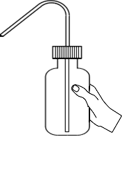
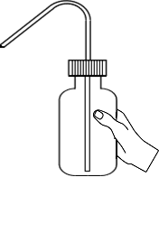

Determination of Turbidity in water
Objective:
To determine the turbidity of the given water sample using Nephelometer.
Apparatus used:
Nephelometer, Nephelometer tube, Pipette, Beaker, Glass rod etc.
Solutions used Hydrazine sulphate, Hexamethylenetetramine (CH2)6N4, Distilled water, Water samples. Description Turbidity is a measure of the degree to which the water loses its transparency due to the presence of suspended particulates.


Take Hydrazine Sulphate in a beaker and measure it to 1g using the weighing scale.
0.000 g


Add 100ml distilled water to the beaker. Then stirr it with glass rod.
 

Take Hexamethylenetetramine in a beaker and measure it to 10g using the weighing scale.
0.000 g
Add 100ml distilled water to the beaker. Then stirr it with glass rod.
Mix 5ml of solution 1 and 5ml of solution 2 in a flask. Let it stand for 24hour at 25 ± 3°C.


Take mixed solution in a Nephelometer tube.

Calibration of Nephelometer
Place the sample cell with distilled water in the Nephelometer. Set readings to zero by adjusting coarse and fine knob.


0.000


Now place 100 NTU calibration standard in the sample holder of Nephelometer. Adjust the calibrate knob to set the readings to hundred.
0.000

Now measure the turbidity of water sample 1 by placing sample tube in the Nephelometer.
0.000
Turbidity of water sample 1 = 41.6NTU
Now measure the turbidity of water sample 2 by placing sample tube in the Nephelometer.
0.000
Turbidity of water sample 1 = 0.02NTU
Observations :
The turbidity of water sample 1 =
41.6 NTU
The turbidity of water sample 2 =
0.02 NTU
The acceptable limit for turbidity of drinking water is
<1NTU >1NTU 2NTU >2NTUTitration =